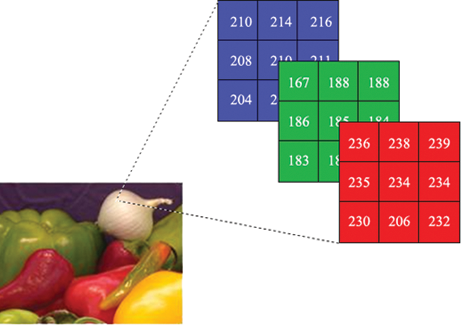

Computer hardware#
Never trust a computer you can’t throw out a window.
— Steve Wozniak
Slides/PDF#
Definition: Computer#
Computers are ubiquitous nowadays and perform many tasks in our daily lives. They are formally defined as
A computer is a device that processes data using programmable calculation rules.
Computers are now found almost everywhere. There are many different kinds of computers that are specialized for different applications. Nevertheless, all of them are based on the same hardware architecture.
Supercomputer – Special-purpose computers with very many CPUs and GPUs for highly parallel processing of complex problems (e.g., weather simulations)
Mainframe – Special-purpose large machines with very high reliability, e.g., in banks
Server – Computers in data centers without a display for the Internet or cloud computing
Personal Computer (PC) – Desktop computers in offices or at home for work, gaming, etc.
Laptops – Mobile computers on the go for work, gaming, studying
Smartphones – Mobile devices with a touchscreen and limited phone functionality
Tablets – Mobile computers with large touchscreens and no phone functionality
Embedded Computers – Small computers in cars, robots, and smart homes
PC Build#

The core components of a computer are:
the CPU as the central processing unit,
the GPU for graphical applications,
the RAM as the main memory, and
a hard drive (HDD) or solid-state drive (SSD)
The computer has memory types similar to those of humans:
CPUs and GPUs have small registers and cache memory (ultra-short-term memory)
RAM is volatile memory, i.e., its contents are lost when powered off (short-term memory)
The HDD/SSD is non-volatile storage, i.e., its contents remain (long-term memory)
Central Processing Unit (CPU)#
The CPU (Central Processing Unit) is the computer’s processing unit and is responsible for executing applications, calculations, and operations. It processes a sequence of instructions in the form of a computer program. Modern CPUs consist of a few processing cores (2–32) with very high performance to execute complex calculations quickly. A CPU consists of millions of transistors that are only a few nanometers (1000000nm = 1cm) in size. A few transistors can perform only a single logical operation.
Graphics Card (GPU)#
The graphics card GPU (Graphic Processing Unit) is responsible for processing graphics (2D, 3D, and videos) and parallel computations. In some computers, the GPU is integrated into the CPU, while gaming PCs and workstations often use separate, powerful graphics cards. Modern GPUs consist of thousands of very simple processing units that have little computing power and memory, but thanks to their quantity they can perform many parallel computations, in contrast to the CPU.
RAM (Random Access Memory)#
RAM (Random Access Memory) is the temporary storage in which data and programs are loaded during operation. A larger RAM enables faster performance and multitasking capabilities.
Hard Disk Drive / Solid State Drive#
HDDs and SSDs (Hard Disk Drive / Solid State Drive) are the computer’s non-volatile storage, where the operating system, programs, and data are stored. HDDs (hard disk drives) store data on rotating disks, while SSDs (solid-state drives) use flash memory and are generally faster.
Motherboard with the Communication Bus#
The motherboard is the main circuit board of the computer, on which the CPU, RAM, GPU and other components are connected. The components exchange information via a communication bus.
Binary Numbers#
Computers store, process, and transmit data in the form of binary numbers. This is because transistors in the CPU can only distinguish two states and thus perform only logical operations. The word “binary” comes from the Latin “binarius” and means “twofold” or “double.” The binary system is the smallest meaningful numeral system and uses only two distinct symbols: 0 and 1. These two values can be interpreted in different ways, for example as “off” and “on,” “false” and “true,” or simply as the numbers 0 and 1. By combining many such binary digits (bits), complex data and information can be represented and processed in computers.
Unit |
Abbreviation |
Decimal Value |
Binary (IEC) |
Abbreviation |
Binary (Bytes) |
|---|---|---|---|---|---|
Kilobyte |
kB |
1,000 |
Kibibyte |
KiB |
1,024 |
Megabyte |
MB |
1,000,000 |
Mebibyte |
MiB |
1,048,576 |
Gigabyte |
GB |
1,000,000,000 |
Gibibyte |
GiB |
1,073,741,824 |
Terabyte |
TB |
1,000,000,000,000 |
Tebibyte |
TiB |
1,099,511,627,776 |
Representation of integers in the binary system#
In principle, integers in a computer are represented in the binary system. For this, the decimal system, which is based on base 10 and uses the digits 0 through 9, is converted to the binary system based on base 2 with the digits 0 and 1. Each place value of a binary number corresponds to a power of 2, starting at the far right with \(2^0\). To convert a decimal number to a binary number, the number is decomposed into sums of powers of two.
Decimal |
Binary |
Hexadecimal |
|---|---|---|
0 |
0000 |
0 |
1 |
0001 |
1 |
2 |
0010 |
2 |
3 |
0011 |
3 |
4 |
0100 |
4 |
5 |
0101 |
5 |
6 |
0110 |
6 |
7 |
0111 |
7 |
8 |
1000 |
8 |
9 |
1001 |
9 |
10 |
1010 |
A |
11 |
1011 |
B |
12 |
1100 |
C |
13 |
1101 |
D |
14 |
1110 |
E |
15 |
1111 |
F |
Example: The decimal number 13 is represented in binary as follows:
Decomposition into powers of two: \(13 = 8 + 4 + 1 = 2^3 + 2^2 + 2^0\)
In binary this is written as \(1101\). Each place (from right to left) corresponds to \(2^0\), \(2^1\), \(2^2\), \(2^3\), etc. The digit is 1 if the respective power is contained in the number, otherwise 0.
We also write \(13_{10} = 1101_2\), i.e., 13 in base 10 and 1101 in base 2.
Thus any number can be represented as a sequence of zeros and ones. Computers store and process numbers internally always in this binary form.
Representation of real numbers in the binary system#
Real numbers cannot be represented exactly in a computer, because they often have many and even infinitely many digits after the decimal point (e.g., 1/3, π). Instead, the computer uses an approximate representation, the so-called floating-point number. This is based on an exponential notation, similar to mathematics:
where (m) is the mantissa, (e) the exponent, and the sign is (\pm). In a computer, however, the binary system is used, therefore the representation is:
Here (m) is the binary mantissa (between 1 and 2), (e) the binary exponent.
Example: We want to represent the number (-13.25) as a floating-point number in the format (\pm m \times 2^e):
Sign: The number is negative, so 1.
Decimal number in binary form: (13.25_{10} = 1101.01_2)
Exponent shift: (1101.01_2 = 1.10101_2 \times 2^3)
Decomposition into mantissa: (1.10101_2) and exponent: (3)
Result: (-13.25 = -1.10101_2 \times 2^3)
In practice, the numbers are usually stored in the standardized IEEE 754 standard as 32-bit floating-point numbers (float) or 64-bit (double). In doing so, the bits are padded so that they fit into 32 or 64 bits. This changes the representation somewhat:
Sign bit: (1) (negative)
Exponent with bias: (3 + 127 = 130_{10}) ((10000010_2))
Mantissa padded with zeros: (10101000000000000000000)
The binary representation in memory is therefore:
1 10000010 10101000000000000000000
Thus, arbitrary real numbers in the computer are stored as IEEE 754 floating-point numbers.
A limited number of bits cannot represent all real numbers exactly. It results in rounding errors and finite precision.
Representation of Characters in Computers#
Text is stored in a computer as a sequence of numbers, which are in turn binary-coded. Each letter, every punctuation mark, and every other character is represented by a specific number. This mapping is defined in so-called character encodings such as ASCII or Unicode.
Lowercase letter |
Decimal |
Binary |
Uppercase letter |
Decimal |
Binary |
Digits/Special characters |
Decimal |
Binary |
|---|---|---|---|---|---|---|---|---|
a |
97 |
01100001 |
A |
65 |
01000001 |
0 |
48 |
00110000 |
b |
98 |
01100010 |
B |
66 |
01000010 |
1 |
49 |
00110001 |
c |
99 |
01100011 |
C |
67 |
01000011 |
2 |
50 |
00110010 |
d |
100 |
01100100 |
D |
68 |
01000100 |
3 |
51 |
00110011 |
e |
101 |
01100101 |
E |
69 |
01000101 |
4 |
52 |
00110100 |
f |
102 |
01100110 |
F |
70 |
01000110 |
5 |
53 |
00110101 |
g |
103 |
01100111 |
G |
71 |
01000111 |
6 |
54 |
00110110 |
h |
104 |
01101000 |
H |
72 |
01001000 |
7 |
55 |
00110111 |
i |
105 |
01101001 |
I |
73 |
01001001 |
8 |
56 |
00111000 |
j |
106 |
01101010 |
J |
74 |
01001010 |
9 |
57 |
00111001 |
k |
107 |
01101011 |
K |
75 |
01001011 |
! |
33 |
00100001 |
l |
108 |
01101100 |
L |
76 |
01001100 |
? |
63 |
00111111 |
m |
109 |
01101101 |
M |
77 |
01001101 |
. |
46 |
00101110 |
n |
110 |
01101110 |
N |
78 |
01001110 |
, |
44 |
00101100 |
o |
111 |
01101111 |
O |
79 |
01001111 |
(space) |
32 |
00100000 |
Modern computers often use Unicode (e.g., UTF-8) to be able to represent characters from other languages and special characters. Here too, the characters are represented as numbers and then stored in binary. Thus the binary encoding of characters runs through all levels of computer technology, from storage in RAM to rendering in the GPU for display on the screen.
Image representation on a computer#
Images are stored on a computer as a collection of small picture elements, called pixels. Each pixel represents a tiny part of the image and has a specific color. To digitally store an image, the image is first divided into a grid of pixels with a specific resolution (e.g., 1920 × 1080 pixels).

The color of each pixel is described by numeric values. For color images, the RGB color model is often used, in which each color is composed of the three primary colors red, green, and blue. For each of these colors, a numeric value is stored, usually in the range from 0 to 255 (that corresponds to 1 byte per color channel). A single pixel thus requires 3 bytes (24 bits) to store all color information.
Example: A pixel with values Red = 120, Green = 200, Blue = 150 is stored in the computer as three numbers. These numbers are subsequently converted into binary numbers, e.g.
120 (Red) → 01111000
200 (Green) → 11001000
150 (Blue) → 10010110
All pixels of an image are stored in memory as a long sequence of binary numbers in this way. This allows the computer to reconstruct, display, or further process the image.